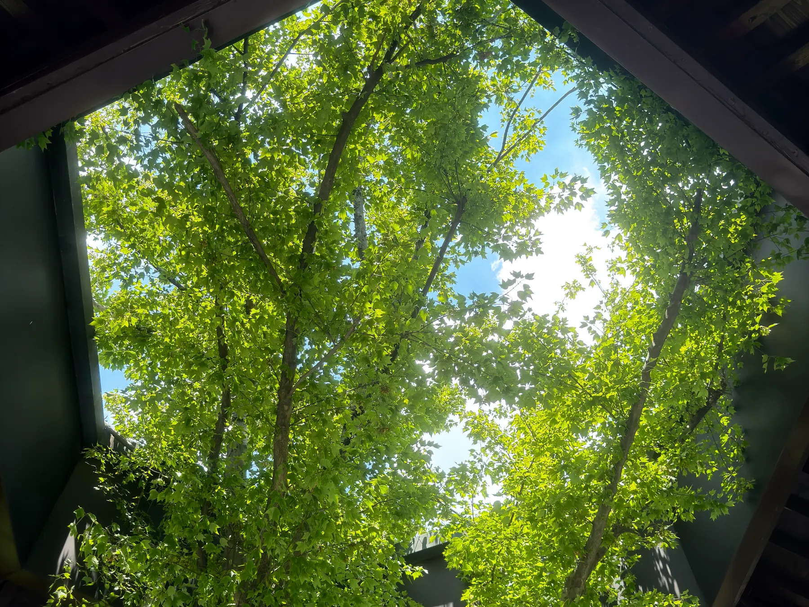
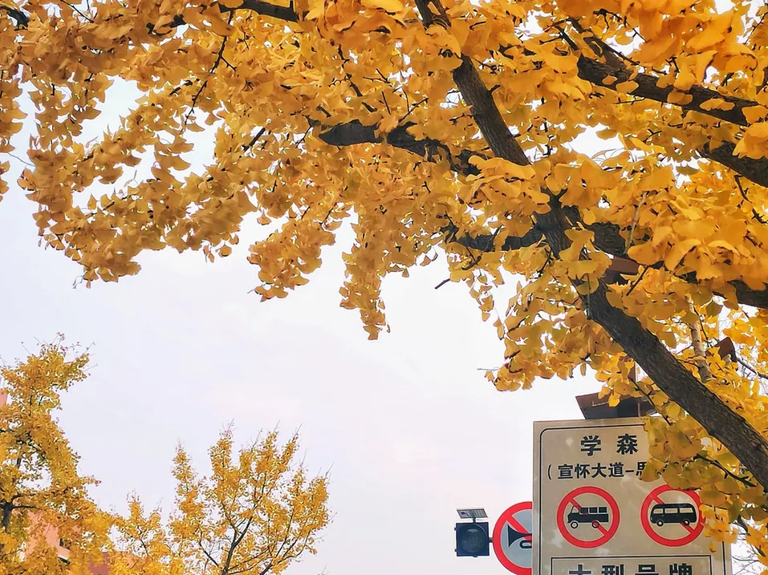
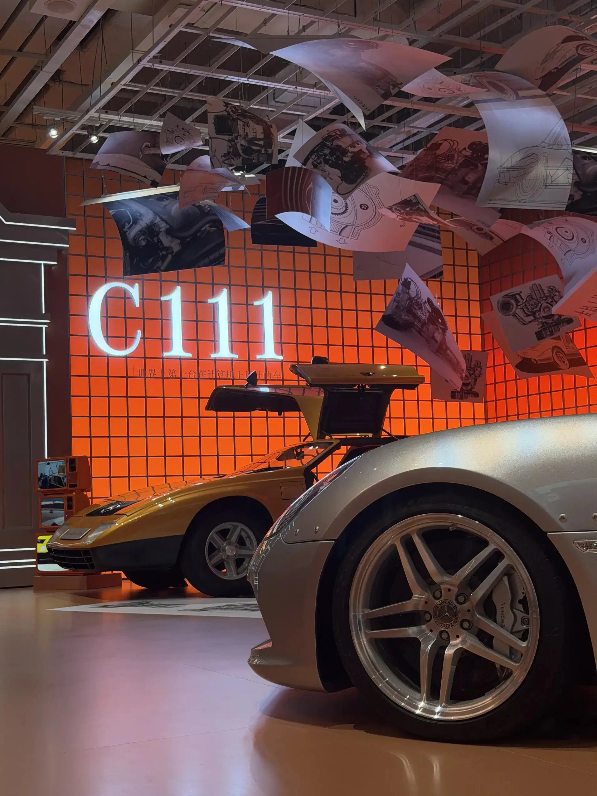
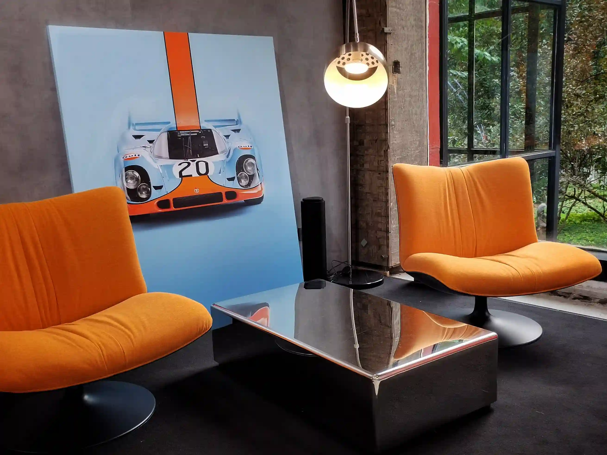

MARSALA.
There is a certain elegance in colors that never demand attention. Warm yet restrained, Marsala possesses a quiet richness that feels at home in Giorgio Morandi's world, subtle yet somehow unforgettable.
“What is there, however strange,
can be accepted without question;
familiarity will be what overwhelms us.”
—— Eudora Welty

We keep giving our thoughts a shape. Strange how they sometimes end up saying something else.


I've never been particularly fond of going out or socializing face to face. Fortunately, there are people who find other ways to communicate with the world — through architecture, art, and other things they create.
There's something comforting about that. I find a quiet sense of reassurance in these forms of expression, and in the possibility of understanding someone without ever having to meet them.


There is a certain elegance in colors that never demand attention. Warm yet restrained, Marsala possesses a quiet richness that feels at home in Giorgio Morandi's world, subtle yet somehow unforgettable.
Perhaps the world has never quite settled on how it wishes to be seen.



A landscape has no particular obligation to be beautiful. It simply exists, indifferent to whether anyone happens to be looking. And yet, every so often, the arrangement of light, colour, and distance becomes almost impossibly convincing.
I like to think that some of these moments deserve a second look. Others may have been entirely ordinary. The distinction, I suppose, is largely a matter of perspective.

Perhaps it is the engineering. Perhaps it is the design. More likely, it is something I have never quite learned to explain.


It is difficult to justify an affection for machines on purely rational grounds. Their beauty is often impractical, their personalities entirely imaginary, and their imperfections sometimes more appealing than their virtues.
Still, there is something irresistible about the way engineering becomes character. A particular silhouette, an unusual proportion, a design that could only have belonged to its time. Some things are simply worth admiring, whether or not they make much sense.